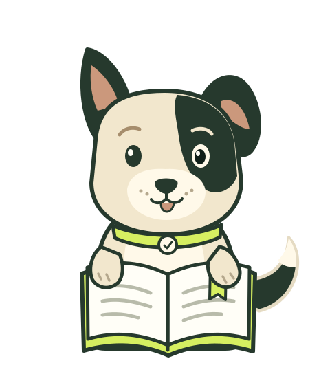

A little help with the everyday.
A new notebook puppy made for the plan and Premium screens. A gentle hello, a curious page turn, then a quiet rest.
Loading the new local Rive file. The still is already visible.

A new notebook puppy made for the plan and Premium screens. A gentle hello, a curious page turn, then a quiet rest.
Loading the new local Rive file. The still is already visible.
